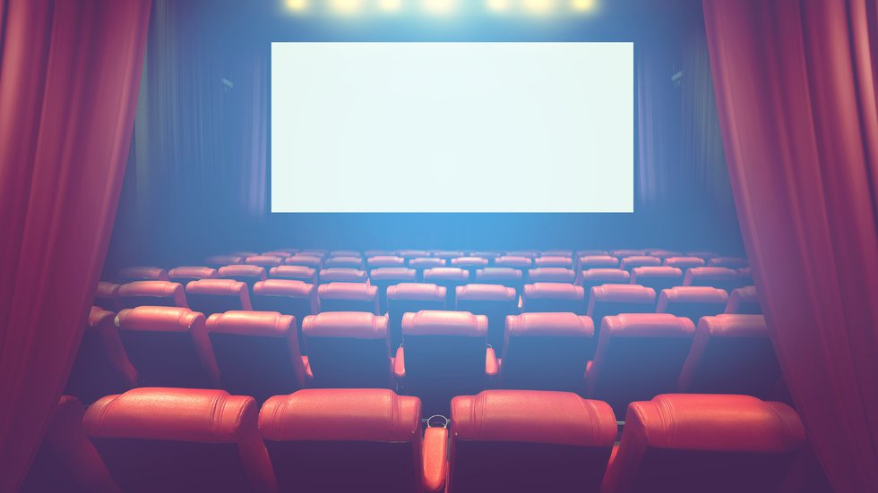
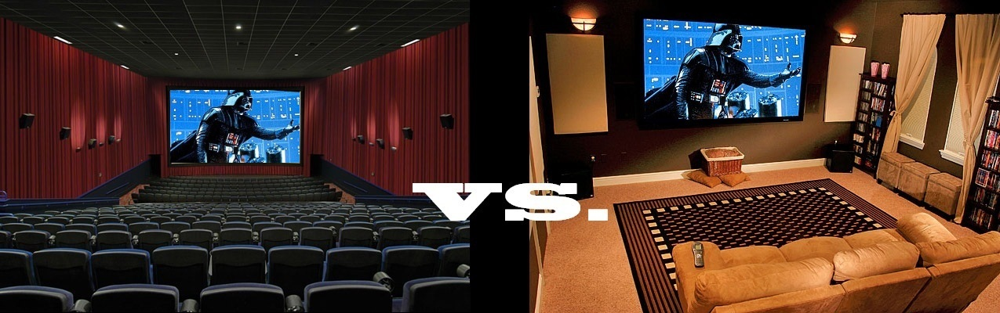
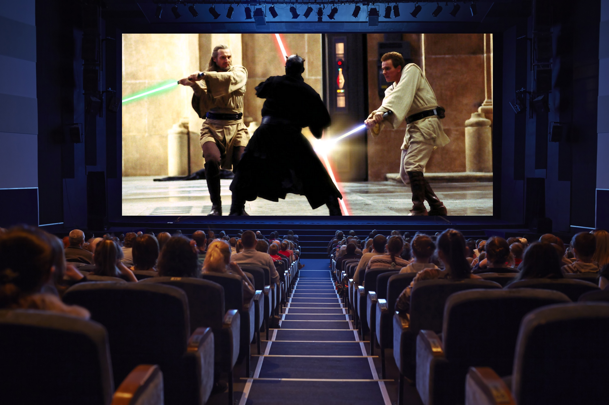
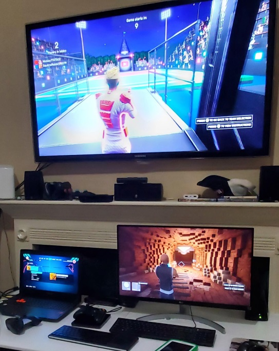

A Ludic Historian Précis
I refer to this content as my Ludic Historian series. But what does that actually mean? Great question! Here I'll break that title down a little bit and give a feel for what this is all about.
Starting a Ludic History
Starting a Ludic History requires me to consider both "ludic" and "history." In short, Ludic Historian is going to be about looking at the history of games and, within that broad context, a focus on computer games in particular and, even more particularly, on video games. That's simple enough but let's dig down a little deeper.
Delving deeper into the realm of a ludic history involves more than just exploring the evolution of games; it's a journey into the very essence of human interaction, creativity, and technological advancement. In this series, while there is a focus on the more culturally relevant video games, I will try to unravel the intricate tapestry of play, from ancient games etched into the sands of time to the pixelated landscapes of modern video games.
This is a narrative that I believe transcends mere entertainment, weaving together threads of culture, psychology, and innovation. As we navigate the labyrinth of what I call Ludic History, I want to examine the societal shifts reflected in game design, the technological leaps that propelled gaming into new areas of interaction, and the intangible yet profound impact of games on the human experience. Every game is a portal to a chapter in the vast book of human playfulness.
The Focus on Ludic
The term ludic derives from ludus, meaning "play." This is a term that's useful in connection with games and, more broadly, rules of play.
-
ludic
adjective
of, relating to, or characterized by play. -
ludically
adverb
in a ludic or playful manner.
What the term "ludic" does is take us into so-called "game studies." There are two broad approaches taken to analyzing video games in this context, which are ludology and narratology.
- Ludology focuses on the ludic structure of games, by which is meant the design of a game, the mechanics, and the dynamics. Essentially how the game plays as a game and how that gameplay influences players.
- Narratology is concerned with narrative structures of some experience, like films and video games, and understanding how those structures influence the intended audience.
There's an interesting intersection of how narrative became ever more sophisticated in the context of ludic experiences and my plan is to cover that history here as and when appropriate.
Ludic Experiences Pull Us In
Ludic experiences possess a magnetic quality, drawing us into their immersive realms with an irresistible allure. Whether it's the strategic dance of chess pieces on a board or the pixelated wonders of a virtual universe, games have an inherent ability to captivate our attention and engage our minds.
Beyond those concepts of ludology and narratology, I want to provide a game historian's view of what I'm calling ambient heuristics. What does that mean? Well, consider the terms:
- Ambient: an aspect of the environment that completely surrounds you
- Heuristic: enabling a person to discover or learn something for themselves
This framing device is interesting to me. And I say that because in ludic experiences there's a unique fusion of challenge and reward, a dynamic interplay between skill and chance that keeps us coming back for more. It's the promise of exploration, the thrill of overcoming obstacles, and the satisfaction of achieving goals that creates a gravitational pull.
In the world of ludic experiences, we become active participants, co-authors of stories unfolding in real-time. It's a testament to the power of play to not only entertain but to ensnare our curiosity, sparking a journey where the boundaries between reality and the game can blur, and the joy of the ludic experience becomes a timeless, immersive adventure.
Reinforcing this view for me was the book In the Blink of An Eye by Walter Murch. Murch was a sound-designer and editor for films and in this book he states his view that the act of engaging with cinema was, in essence, passing through a sort of window:
With a theatrical film, particularly one in which the audience is fully engaged, the screen is not a surface, it is a magic window, sort of a looking glass through which your whole body passes and becomes engaged in the action with the characters on the screen. If you really like a film, you're not aware that you are sitting in a cinema watching a movie. Your responses are very different than they would be with television. Television is a 'look-at' medium, while cinema is a 'look-into' medium.
I feel the exact same sentiment can apply to games. Colin McGinn, a professor of philosophy, wrote a book called The Power of Movies: How Screen and Mind Interact. McGinn agrees with Murch that there is, in fact, a fundamental distinction between "watching a movie" and "watching a TV."
There remains a significant point of difference between the two types of screen [cinema and TV], arising simply from the physical nature of the TV screen. For the TV itself — a piece of rectangular glass sitting in front of the viewer — is an object that can all too easily become a visual surface in its own right, as when light from the window or a lamp falls across its glassy face.
McGinn continues:
Then we find our attention distracted from the film we are watching to the medium of our watching it; the screen asserts its identity, its solidity, its thingness.
McGinn's statement suggests that a television, unlike a window or a purely immersive experience, remains a tangible object that's always present and demands our attention. McGinn's point is highlighting the materiality and physicality of the television set, which can be seen as a bulky piece of hardware rather than a transparent portal into some fictional realm. Emphasizing that very point, McGinn says:
We can never quite make a TV screen go away. We are always looking at a bulky piece of hardware that is on the brink of gaining our attention. The TV set is uncomfortably close to being a piece of furniture — not an impalpable magic window onto another world.
McGinn's point, like that of Murch, was that television just can't match the immersive power of cinema. In terms of physical dimensions, even the largest television is generally dwarfed in size and scope by the cinema screen.
Thus the large-sized cinematic "window" in effect consumes our immediate physical environment, essentially consuming us.
The scope and scale can literally pull us into another world. Once the experience is finished — once the movie ends — then the real world floods back into our senses.
One more thought from McGinn on this:
We never quite enter the world of the film that is being broadcast as we do in the movie theatre. The typical television set is just too small to escape its identity as one object in the visual field among many — as just one of the things competing for our attention. By contrast, because of its sheer size, the movie screen can hardly be singled out within the visual field as one object among many; hence its capacity to assume the dimensions of a whole world.
Cinema, at least to a degree not equally possible with television, seems capable of detaching us from our physical environment. Equally, at least in part, cinema is able to usurp our mental environment.
I personally think this is even more true of games and has little to do with the size and scope of our devices, which can encompass tablets, phones, monitors and so on.
So if the "size" of the medium is less relevant to the gaming experience, then what does matter? I believe the immsersiveness has more to do with the quality of varied experience. Not only do you have textual, auditory and graphical elements that can be interleaved but all of that is backed up by a form of interactivity that is lacking in relatively passive media like television or cinema.
This intersects a bit with my thoughts on the theseus of gaming. There's a spectrum where ludic and narrative elements work together and where specifically a given experience is on that spectrum is how much games move from Murch's "look-at" to "look-into." This, to my way of thinking, is how games act with ambient heuristics. It's in the context of those heuristics that ludology and narratology can be looked at.
A Focus on History
The nature of gaming experiences, and how those experiences have evolved, is a way of looking a particular slice of history. All of this focus came to me late in my life as a gamer, but there's a history to all of this that's quite fascinating in its own right.
I found an interesting parallel on this path to history in Matt Nicholson's When Computing Got Personal:
The machines themselves may be logical — even maddeningly literal at times — but the way they work is a function of their design, and they were designed by human beings who made decisions that were not always rational, that may have reflected compromises made years earlier and no longer relevant, or were attempts to standardise or improve on what went before. In short, if I was to really understand not only how computers work, but why they work the way they do, I would have to understand their history.
I feel the same way about games and ludic experiences overall. I have to understand their history in order to make sense of them.
As Patrick Hickey, Jr. said in The Minds Behind Adventure Games:
Video games and the importance of their history and the people who created them will never go away. If anything, it's all just beginning.
Moving Past Chronicles
In his book They Create Worlds, Alexander Smith says:
In 2005, Erkki Huhtamo lamented that video game scholarship was stuck in what he called the "chronicle era," in which authors were more concerned with amassing data than analyzing it.
Smith is referring here to the paper "Slots of Fun, Slots of Trouble: An Archaeology of Arcade Gaming" and, sure enough, there Huhtamo says:
The current state of writing on game history could be called its "chronicle era" . . . None of the histories published so far develops a critical and analytic attitude towards its subject.
Huhtamo also wrote a paper called "Resurrecting the Technological Past: An Introduction to the Archeology of Media Art" and his focus there was on excavation. I think that's an interesting approach. Huhtamo states it as such:
The strategies adopted by media archeological artists have parallels with those adopted by archeologically oriented researchers. Media archeological artworks could be even seen as a form of spatialized, conversational "historical writing", as a way of maintaining a dialogue with the technological past.
I very much feel that those who want to move beyond the so-called chronicle era do have to have some of the sensibilities of the archaeologist and the historian. That's a topic I'll likely explore a bit in this series when I talk about my methodology.
Speaking of methodology, let's talk about that a little bit.
Avoiding a Chronology
While I do plan to look at history, and have a historiographical focus, I don't plan on sticking to a chronology. The challenge with a chronology on a topic like this is that you constantly learn more or find side paths of interest.
As such, this would mean either the chronological accounting would constantly be disrupted or, worse, I would simply avoid talking about something I've discovered because my chronological telling has "moved past" that point.
So If Not Chronology, What?
I will essentially be dipping into history here and there and presenting findings on various ludic experiences. It's very likely that a given set of articles will be thematically related and thus at any given time, I'll likely be focusing on specific areas of history that are close together.
At some point I will definitely have to provide a way to compose the content of all of this in a more strict chronological fashion. But I would rather let whatever approach I take emerge rather than be applied at the outset.
So the history of this history starts right here. Like any such endeavor, the future is entirely uncertain but what I can say for certain is that the past has many delights in store.